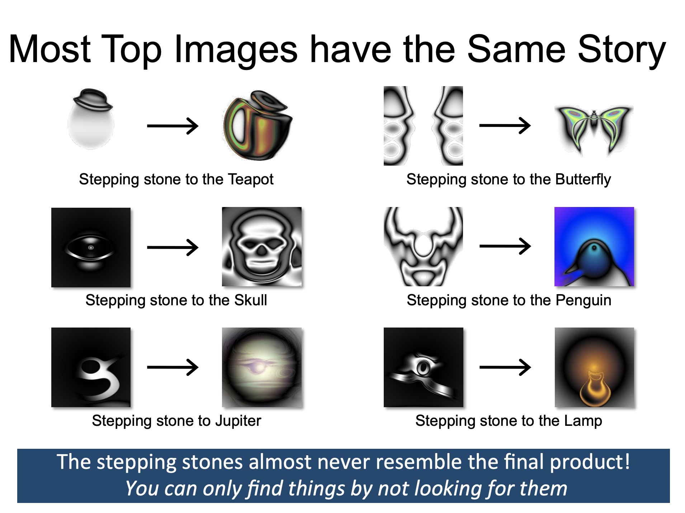

The ‘researcher’s stuff’
In the hope of trying to better understand the thing I pretend to do for a living, I have been reading Isabelle Stenger’s “Another Science is Possible: A Manifesto for Slow Science”. My goal is to better understand why I feel that science is seemingly less efficient and why academia is a, perhaps, an increasingly “special” place to work in.
Early in the book, she compares the “right stuff” NASA test pilots needed to have with what she calls the “researcher’s stuff”.

In Tom Wolfe’s book the “right stuff” was the “stuff” the NASA pilots who survived had — and those who died didn’t have
In this fraternity, even though it was military, men were not rated by their outward rank as ensigns, lieutenants, commanders, or whatever. No, herein the world was divided into those who had it and those who did not. This quality, this it, was never named, however, nor was it talked about in any way.
Stenger rephrases this as
It is precisely this unacceptable degree of dependency that the expression hides: whatever flying coffin they were given to test, those who were killed didn’t have the right stuff.
and links this to working conditions in academia
Far from being treated as a primary resource that is now under threat, young researchers of either gender, doctoral students or postdocs, have to accept the realities of onerous working conditions and fierce competition. They are supposed to grin and bear it: the great adventure of human curiosity presented to them as children is replaced by the theme of a vocation that demands body-and-soul commitment. And this is what we accuse today’s young people of no longer accepting: compliance with the sacrifices that service to science demands.
While there is a lot to say about (working) conditions in academia and how the system in many parts failed to evolve, the link to “over objectivization”, which is perhaps very natural to many scientists, was more interesting to me. In an attempt to increase transparency and objectivity, “objective metrics” are being used to quantify how much “researcher stuff” a researcher has. However, those metrics do, of course, not work for every type of science (Stenger’s attempts to show that they stem from what she calls “fast sciences”). More importantly, however, we know from works such as the one from Kenneth Stanley and Joel Lehman that “greatness cannot be planned” as paths to great discoveries ofteen go via “stepping stones” we cannot anticipate and which optimization of “naiive” metrics would us not lead to.
There is empirical research that some things can be found more easily when not looking for it. This could, for example, be seen in the PicBreeder experiment where participants were asked to “breed” images. 
From this point of view, viewing academia via the lense of the comic Company Hierarchy by Hugh MacLeod makes some sense. In many layers of academia we have the tendency to optimize for metrics (h index, citations, …) which is in this perspective the definition of the “clueless”. [Stenger also has an interesting tangent how this might be tight to current science education. In a Kuhnian perspective of paradigms and “normal science”, we are not really taught to question different ways of thinking, but rather focus in methodological details. Questioning different schools of thinking is perhaps more natural to the social sciences.]{:.aside}

The Clueless cannot process anything that is not finite, countable and external. They can only process the legible.” Certainly this describes the behavior of faculty, literally counting lines on their CV, grubbing for citations, breathlessly calculating their h-index.
To help science, Stenger argues that scientists should start caring more about the broader relevance of their work and not forget, what relevance means in the end: Not bibliometric metrics but rather evaluation by the community
“if a scientific claim can be trusted as reliable, it is not because scientists are objective, but because the claim has been exposed to the demanding objections of competent colleagues concerned about its reliability”
Latter might sometimes correlate with bibliometric metrics but will not always do so. Simply because we rely on many different things (software, databases, …) that are created on very different timescales.
To me, Stenger really urges us to step out of the “ivory tower” and “appreciate the originality or the relevance of an idea but also pay attention to questions or possibilities that were not taken into account in its production, but that might become important in other circumstances”. This is also very important when we think about all the ways technologies can be misused. Stepping out of the ivory tower and taking society serious, however, probably also has to prompt us to rethink working conditions in academia.
In any case, I am very happy to see that new forms of doing science are being explored, because academia certainly is not the only and best way to do science.